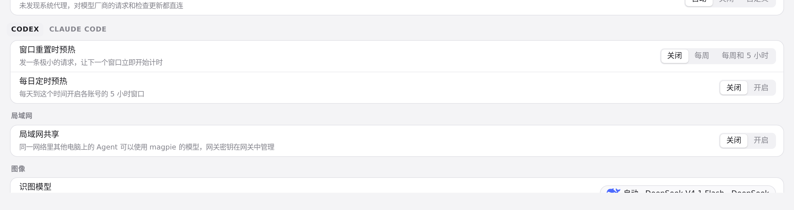
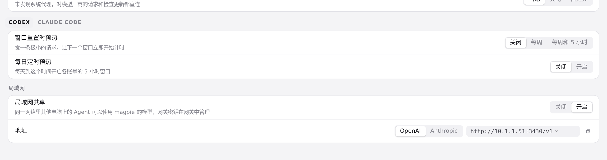
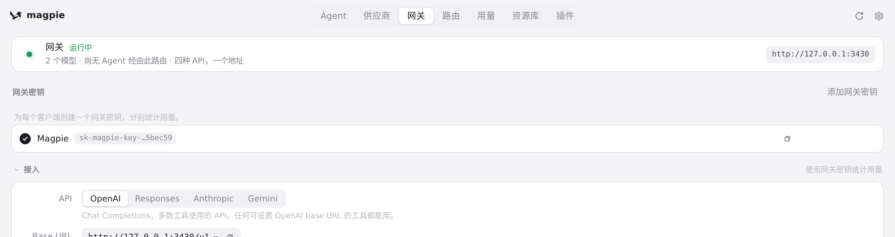
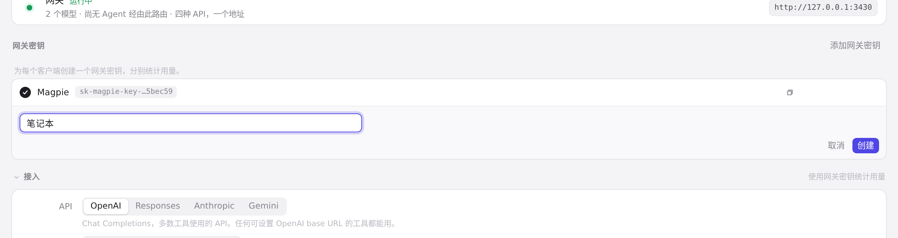
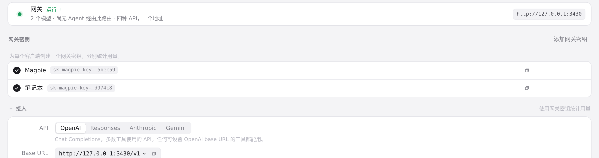
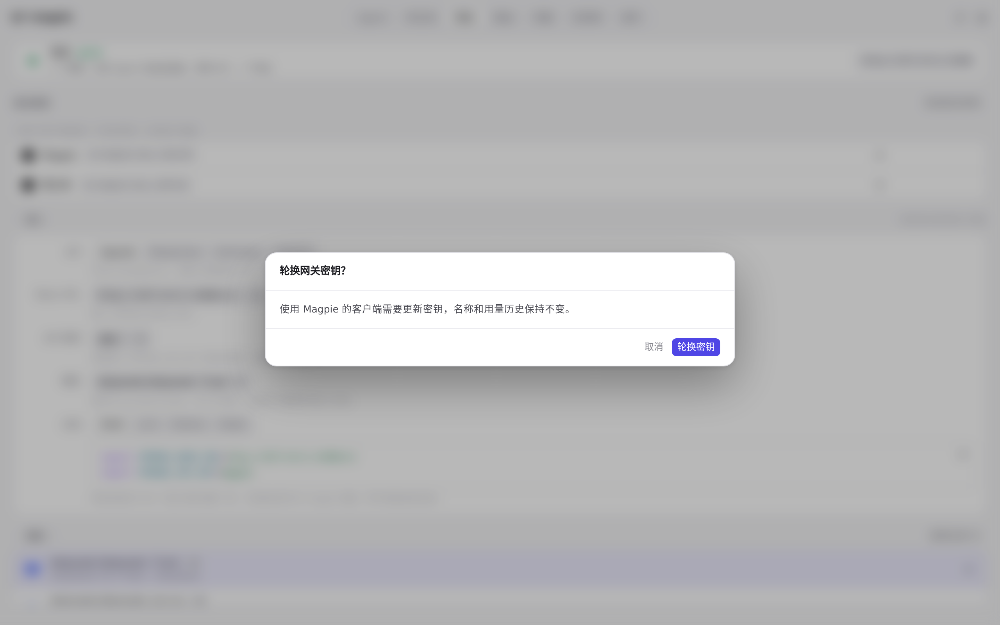
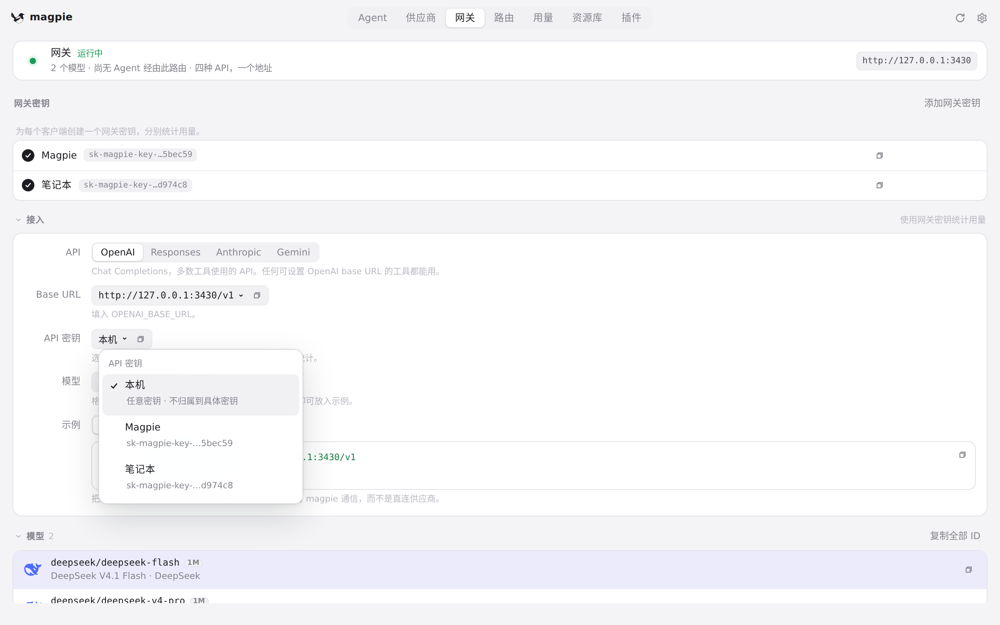
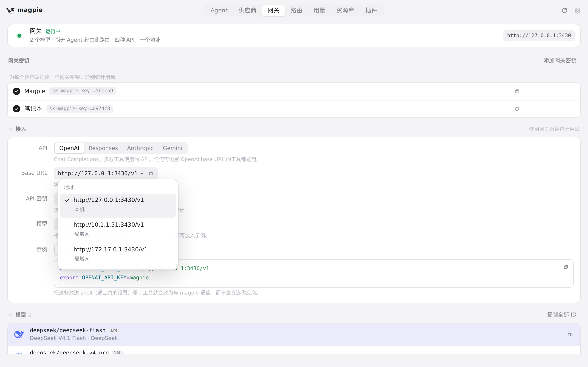
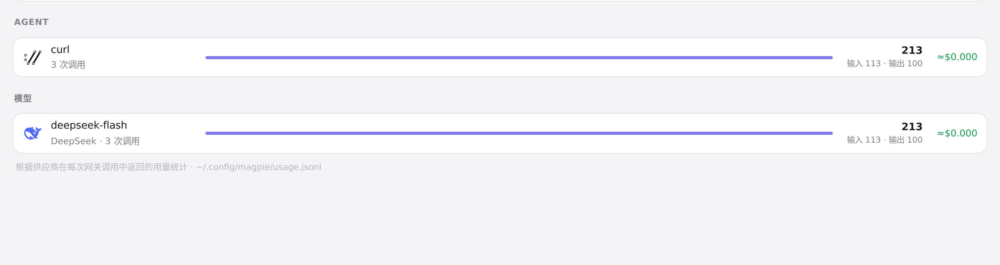
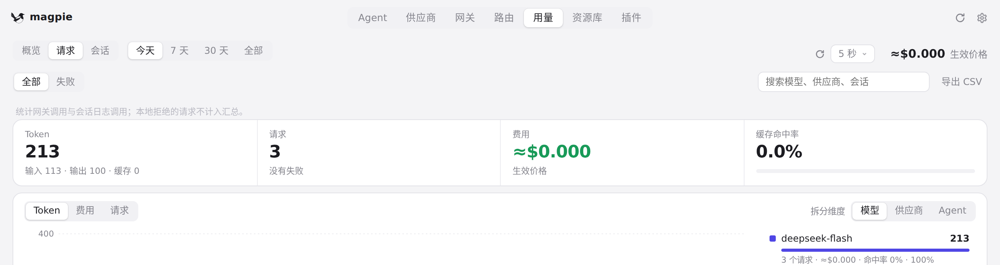

#344 界面预览
commit 23f17f8 · 回到 PR · 网关页新增「网关密钥」管理块（仅在局域网共享开启时出现），可创建、重命名、启用/停用、复制、轮换和移除命名密钥，轮换/移除前有确认框；接入区的 Base URL 与密钥改成可选的下拉（地址分「本机/局域网」，密钥列出已启用的网关密钥）；用量概览新增按网关密钥分组，请求页新增密钥筛选并在行内显示密钥名；设置的「局域网」行去掉了旧的 API Key 显示与「换新 Key」按钮。
红线是鼠标走过的轨迹，红色圆环是一次点击；底部文字是这一步在做什么。空格暂停，← → 逐段查看。

设置里的局域网共享 · 设置 → 局域网区域，共享关闭时

设置里的局域网共享 · 切到「开启」后同一区域

网关密钥的创建与轮换确认 · 网关页的「网关密钥」区域

网关密钥的创建与轮换确认 · 填好名称的新建表单

网关密钥的创建与轮换确认 · 创建后的网关密钥列表

网关密钥的创建与轮换确认 · 轮换确认对话框

接入区的地址与密钥选择 · 展开的密钥选择菜单

接入区的地址与密钥选择 · 展开的地址选择菜单

用量里的网关密钥位置 · 用量 → 概览底部：模型分组之下、统计说明之上的位置

用量里的网关密钥位置 · 请求页顶部的筛选行